下面是加、减、乘、除法则。
下面是加、减、乘、除法则。
■正数、负数和零被称为整数。
把数字排在一条线上，负数在零的左边，正数在零的右边。
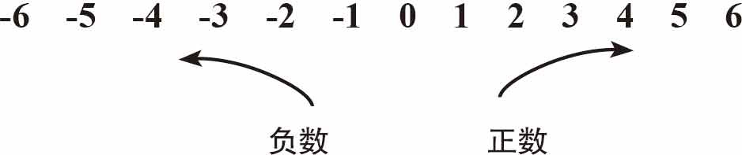
下面是加、减、乘、除法则。
■正数加上或减去一个比它小的正数仍然是正数：
4-2＝2
■当加上或减去一个较大的数时，较大的数的符号就是结果的符号：
-7＋1＝-6
■当两个数相乘或相除时，同号＝正数 异号＝负数
同号＝正数
–÷– 或 –×– 或 ＋×＋ 或 ＋÷＋
无论乘多少个数，偶数个负（-）数相乘都会得到一个正数，奇数个负（-）数相乘结果都会是负数。
规则
4-2＝2 -7＋1＝-6 8-（-3）＝11
双重否定——两个负数相加跟正数相加的方法一样，结果取负号
-2-4＝-6如同（-2）＋（-4）＝-6
乘除
| 同号＝正数 | 异号＝负数 |
| –÷– | –÷＋ |
| –×– | –×＋ |
| ＋×＋ | ＋÷– |
| ＋÷＋ | ＋×– |
例如：
| -2×2＝-4 | -2×（-3）＝6 |
| 6÷（-2）＝-3 | 4×3＝12 |
| -4÷2＝-2 | 6÷（-3）＝-2 |
| 7×（-4）＝-28 | -8÷（-2）＝4 |
你可以准备两把尺子，把它们竖着排列放在杯子上，做成一个简单的加法装置。
需要准备的东西：
►两把尺子
►一个杯子
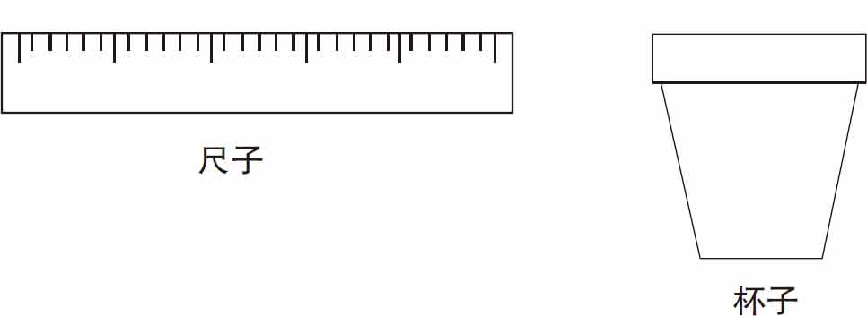
如图1-1所示，将两把尺子竖着排在一起，上面尺子的刻度表示相加的第一个数（如5），下面的尺子的刻度表示相加的第二个数（如4）。将下面的尺子的0刻度对准上面尺子的刻度所代表的数字，最后下面的尺子的刻度所在的位置对应的上面的尺子的刻度就是相加后的值，如5＋4＝9，见图1-2。
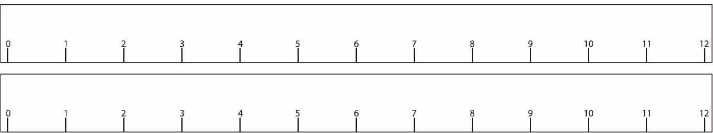
图1-1
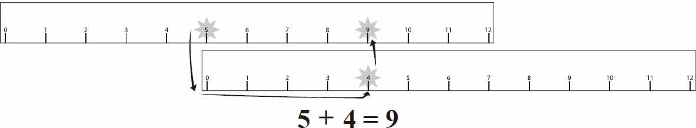
图1-2
执行反向操作，进行减法运算。
如图1-3所示，将两把尺子竖着排在一起，上面尺子的刻度表示相减的两个数（如8和5），下面的尺子的刻度表示，上面两数相减的结果（如3）。将下面尺子的0刻度对准上面尺子的刻度所代表的数字（注意：是对准减数，即减号后面的那个数，减号前面的数称为被减数），最后下面的尺子的刻度所在的位置对应的上面的尺子的刻度（被减数的刻度）就是相减后的值，如8-5＝3。
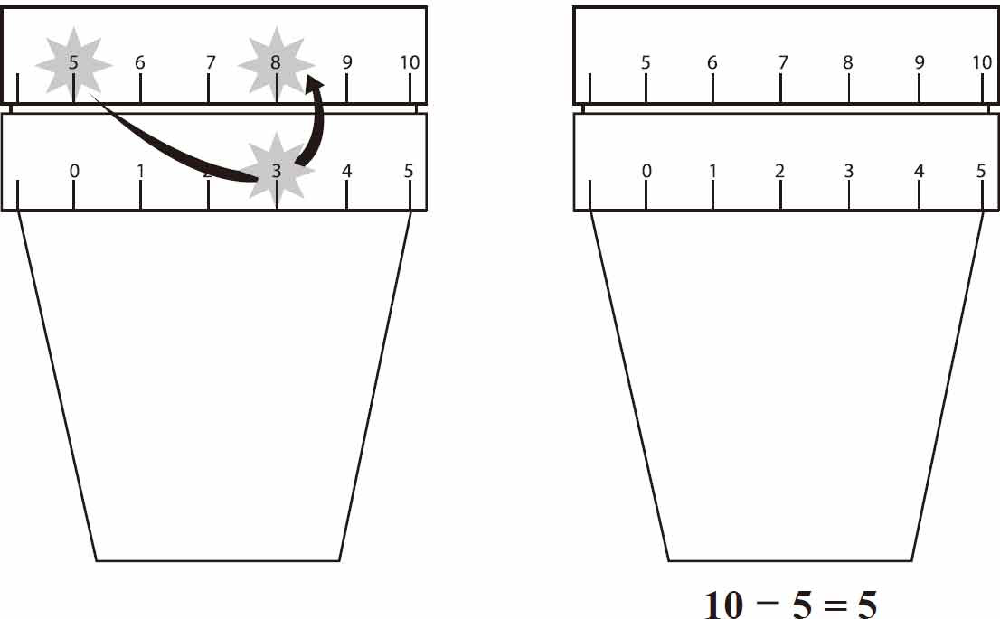
图1-3
苏格兰数学家约翰·纳皮尔发现了对数并且发明了一个简单的计算器来乘以任意两个数。这种的计算器被称为“纳皮尔的骨算筹”，因为它可以由骨、纸等材料做成。
需要准备的东西：
►纸
►钢笔
►剪刀
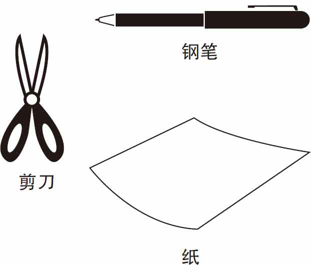
用剪刀剪出十条纸带，每条纸带用横线分为九行，从第二行开始，每个框都用一条斜线将十位数字与个位数字分隔开。如图1-4所示，动手绘制纸带。
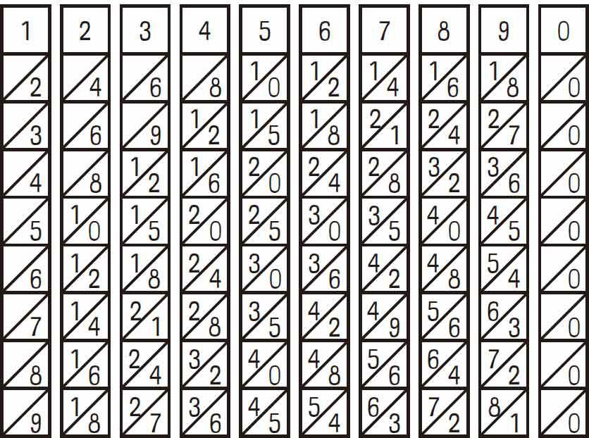
图1-4
计算4812×4，先把第4条、第8条、第1条和第2条纸带按顺序对照排列，根据乘数4，将这四条纸带从上往下竖着数第四格的数字标记出来。如图1-5所示。将斜线两侧的数字交错地加起来，我们就得到了运算的答案。4812×4＝19248。

图1-5
图1-6显示了6375×4的计算过程和结果。
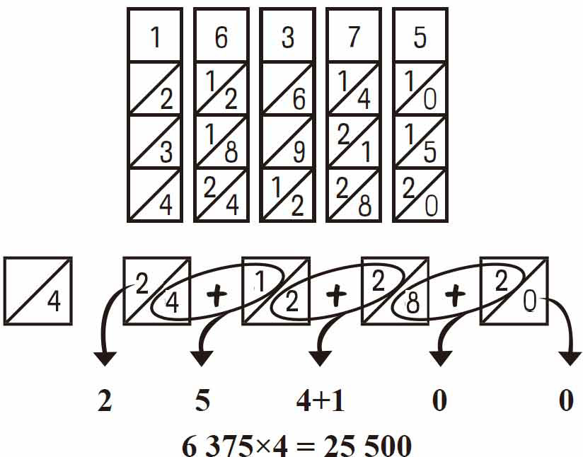
图1-6
注意：当对角线上的两个数字相加的值等于十或大于十时，左边列上的数值加1。这就是为什么6375×4的结果是25500而不是254100。
下面是分数的加、减、乘、除的运算法则。

■分数上方的数字叫分子，下方的数字叫分母。
■当两个分数有一个共同的分母时，你可以简单地把两个分数的分子相加就能得到分数之和。
■当两个分数没有共同的分母时，你必须找到一个共同的分母。注意：这里指的仅仅是分数加减法的运算。
在图1-7所示的例子中，分数
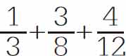
相加，你必须找到这三个分母的公倍数。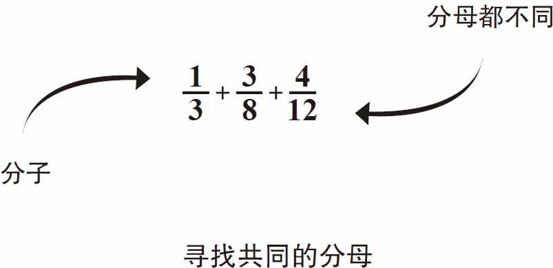
图1-7
列出分母的倍数，直到找到一个公共的分母，然后分子乘上相同的倍数。
如图1-8、图1-9和图1-10所示，3、8和12的最小公倍数是24。每个分母的数分别乘以对应的倍数，使每个分数的分母为24，每个分子乘以其分母相同的倍数。例如，对于分数
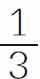
，24除以3等于8。8乘以1得到分子数8，所以 变成了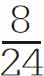
。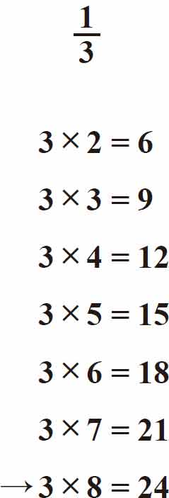
图1-8
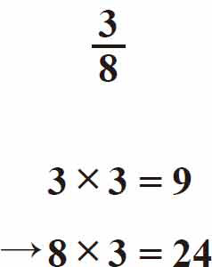
图1-9
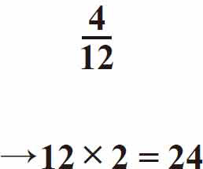
图1-10
同样地，对于分数
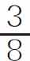
，24除以8等于3。3乘以3得到分子数9，所以 变成了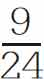
。最后，对于分数
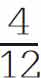
，24除以12等于2。4乘以2得到分子数8，所以 变成了 。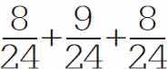
等于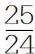
，简化为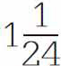
，如图1-11所示。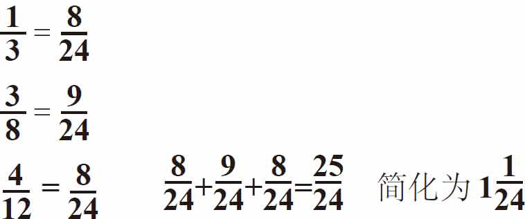
图1-11
■两个分数相减，分母相同，只要分子相减，如图1-12所示。

图1-12
■分数相乘实际上更容易。你不需要找到一个共同的分母。只要把分子与分母分别相乘，如图1-13所示。
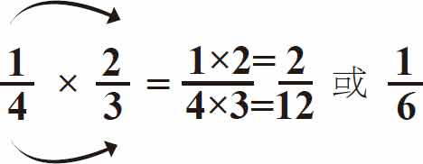
图1-13
■当分数和整数相乘时，先把整数转换成分数形式，然后再相乘。例如：
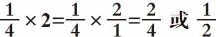
。另一个例子见图1-14。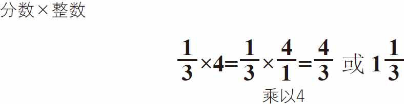
图1-14
■分数与带分数的数相乘，将带分数的数转换成假分数（分子大于分母）后再乘以分数，见图1-15。
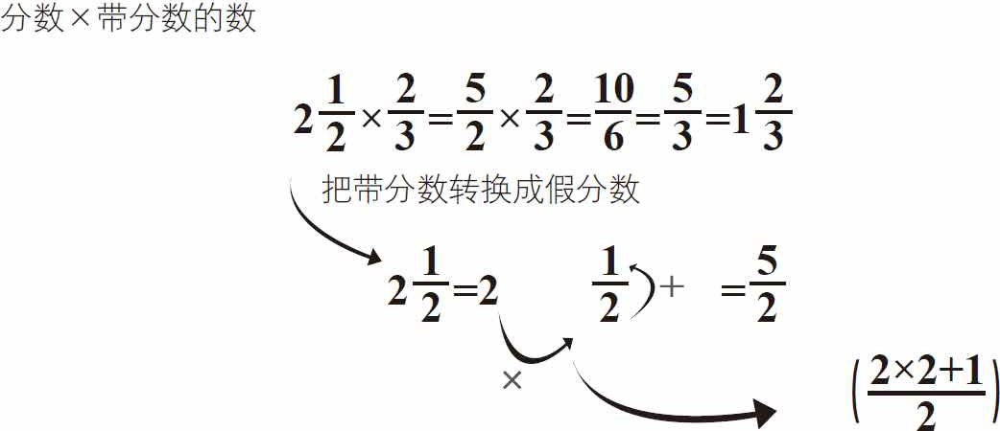
图1-15
■分数相除和分数相乘一样简单。你所要做的就是把第二个分数的分母和分子翻转后再与前面的分数相乘，见图1-16和图1-17。
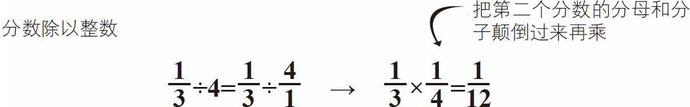
图1-16
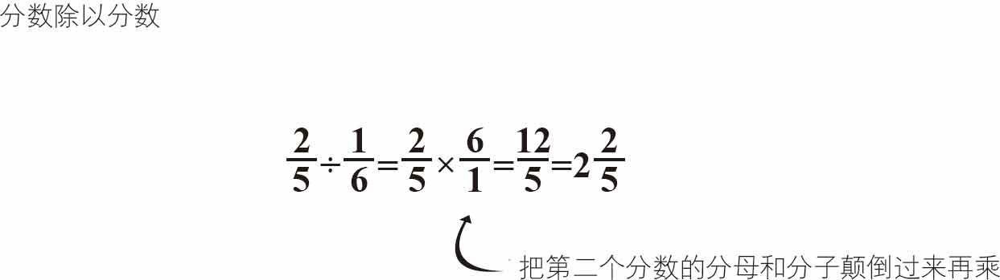
图1-17
■两个带分数相除，先将它们转换为假分数，再把第二个分数的分母和分子倒转过来与第一个带分数相乘，如图1-18所示。
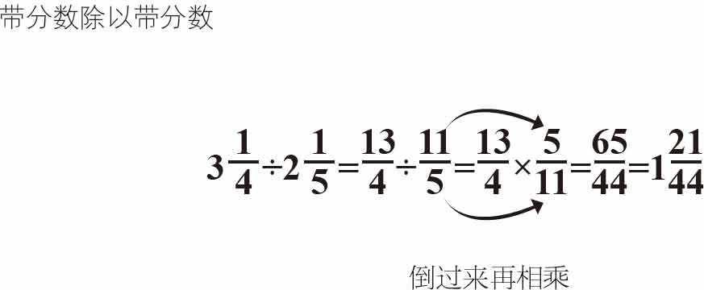
图1-18
接下来讲解的是小数，百分数和分数的运算法则。
■在图1-19中，分数
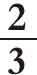
的分母是3，3不能被10或100整除，但数字9可以给你一个大概的结果。你可以像这样乘以333：3×333＝999，2×333＝666，就等于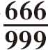
（或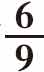
，确切地说等于小数0.66666666666667）。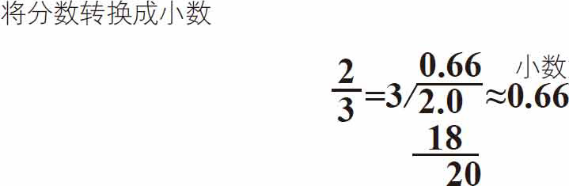
图1-19
■把分数转换成百分数（100的一部分），例如：
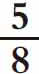
。5除以8等于0.625。转换成百分数，得到62.5％，如图1-20所示。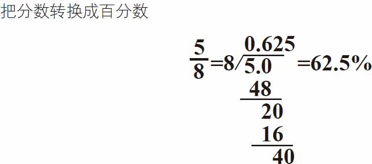
图1-20
■把小数转换成分数，例如：0.30。先把它写成分数 ，简化为
，简化为
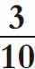
，见图1-21。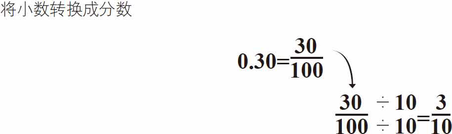
图1-21
奇妙的分数测验练习可以提高你的分数计算能力。
需要准备的东西：
►纸板
►回形针或黄铜纸扣
►CD或DVD或罗盘
►剪刀
►纸
►铅笔
►透明胶带
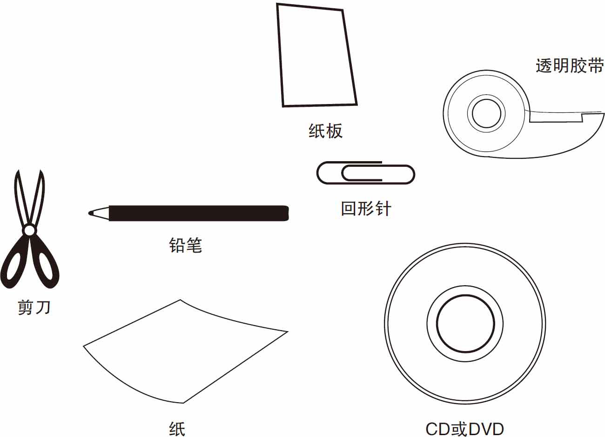
你可以使用下一页的插图作为实验参考，并按步骤操作。
首先，用纸板制作一张CD或DVD大小的圆盘，或者用罗盘来创建直径为3厘米的圆盘，如图1-22所示。
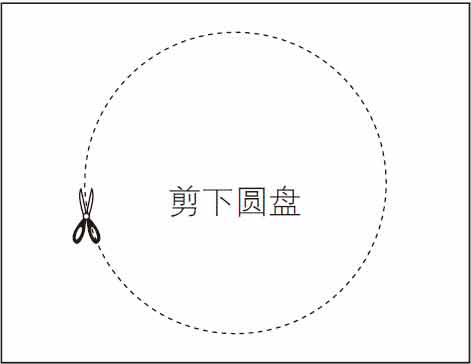
图1-22
接下来，剪出如图1-23所示的矩形纸盖子，包括“窗口”孔。你也可以先用铅笔画出虚线，然后准确地沿着虚线剪开窗口的部分。
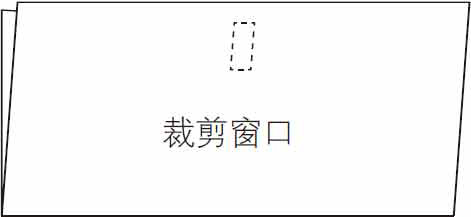
图1-23
把纸盖子对折，在窗口下方打一个孔，如图1-24所示。在圆盘的中心也打一个孔，如图1-25所示。
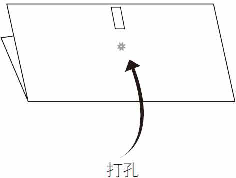
图1-24

图1-25
如图1-26所示，首先将圆盘放在对折的纸盖子里，这样你就可以在需要的时候拨盘来看到答案。然后小心地将黄铜纸扣或回形针从盖子外侧穿过圆盘将其固定住。
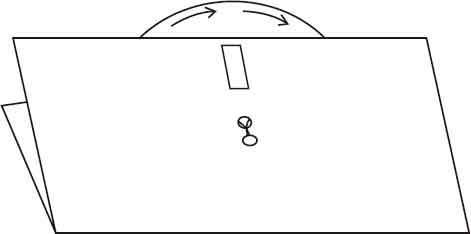
图1-26
拨盘选择方程然后通过窗口查看答案，见图1-27。
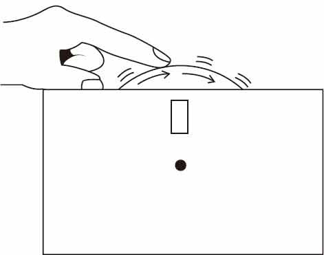
图1-27
 转动刻度盘测试你的分数计算技能！
转动刻度盘测试你的分数计算技能！
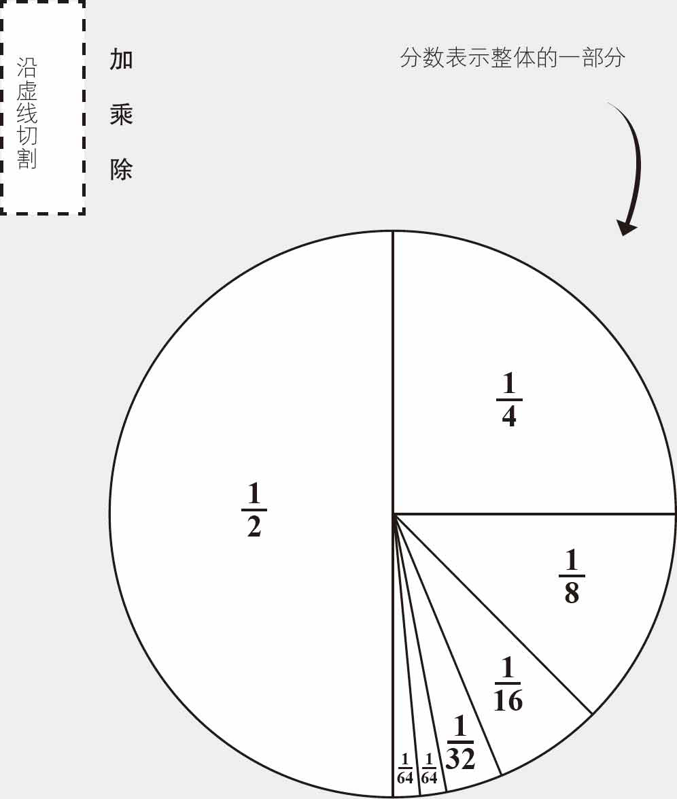
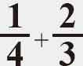
找到共同的分母只需分子相加，你也可以用这种方法做减法！
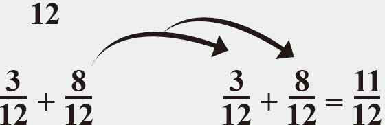
这是很容易的！只是把分子和分母分别相乘。
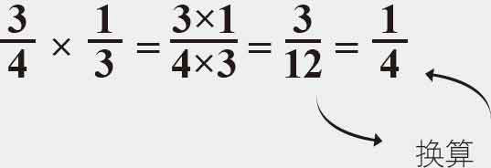
只需把第二个分数的分母和分子倒过来再与第一个分数相乘即可。
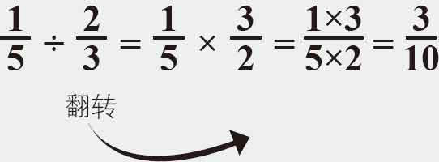
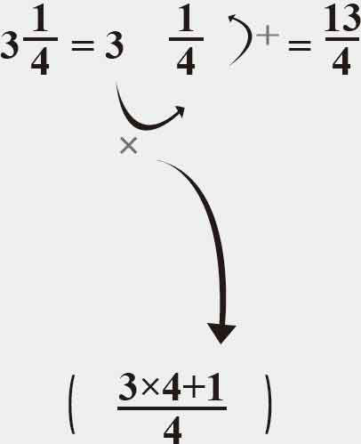
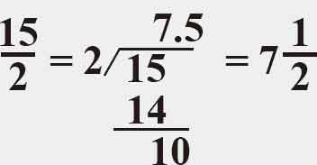
下图是实验的一个举例说明。

如果你手边没有黄铜纸扣，我可以教你如何用剪刀快速地剪出数学卡的窗口，并用回形针将光盘连接起来。
你可以用剪刀剪出数学卡片的窗口部分。从最靠近边沿部分的一侧开始剪裁，如图1-28所示。
图1-28
然后在卡片的内侧粘上一层透明的胶带，以保证数学卡的牢固，见图1-29。
图1-29
图1-30展示了一个回形针，当它在一端的小圆环弯曲时，可以代替纸扣，见图1-31。
图1-30
如果你不想用黄铜纸扣件，你可以弯曲一个回形针并用它来固定数学卡里面的圆盘
图1-31
将一个回形针弯曲成一个1厘米的线圈，一端弯曲
只需将回形针的两端通过数学卡前端的孔以及圆盘的孔，见图1-32。
图1-32
用胶带将两端固定到圆盘的背面，如图1-33所示。
图1-33
现在，你可以自由转动圆盘，见图1-34。
图1-34